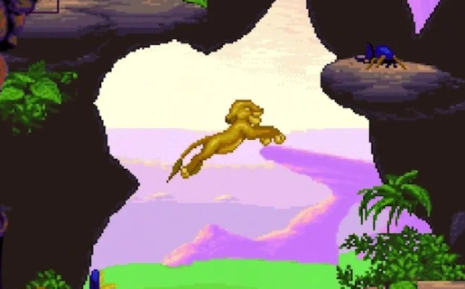
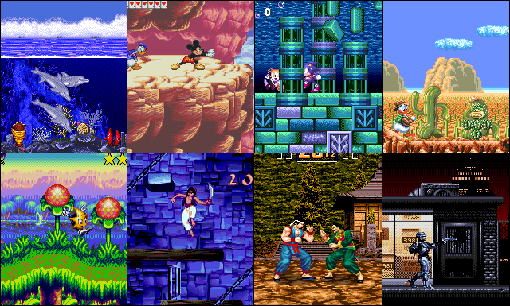
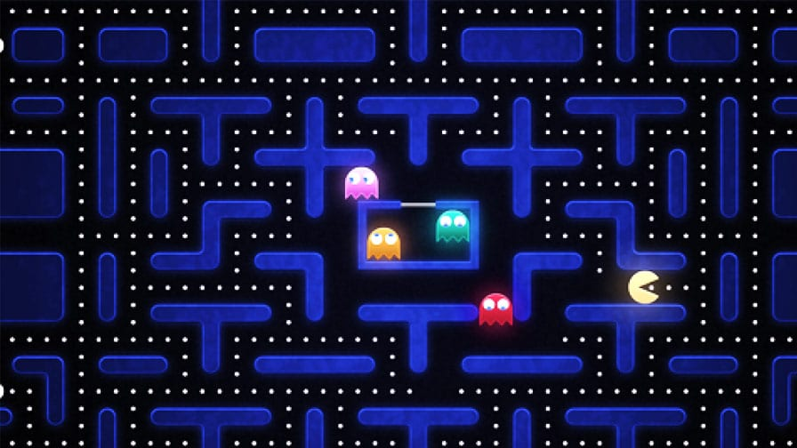
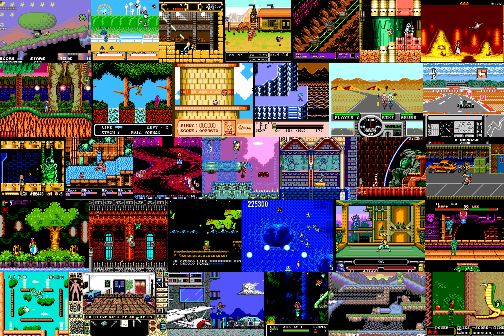
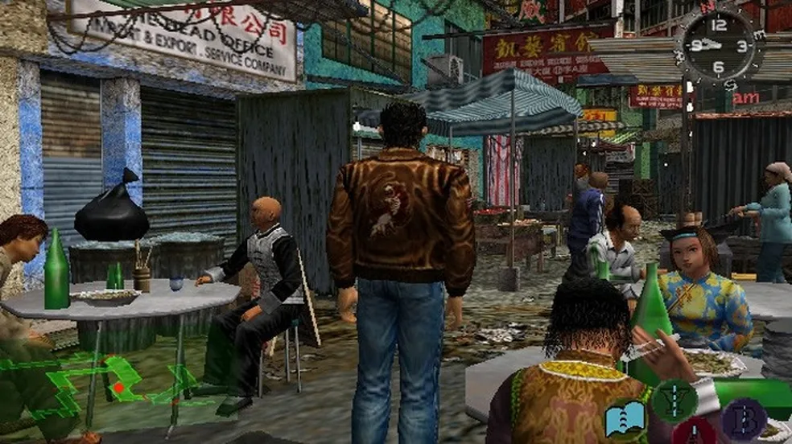
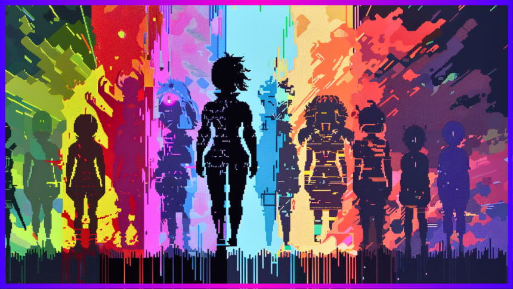
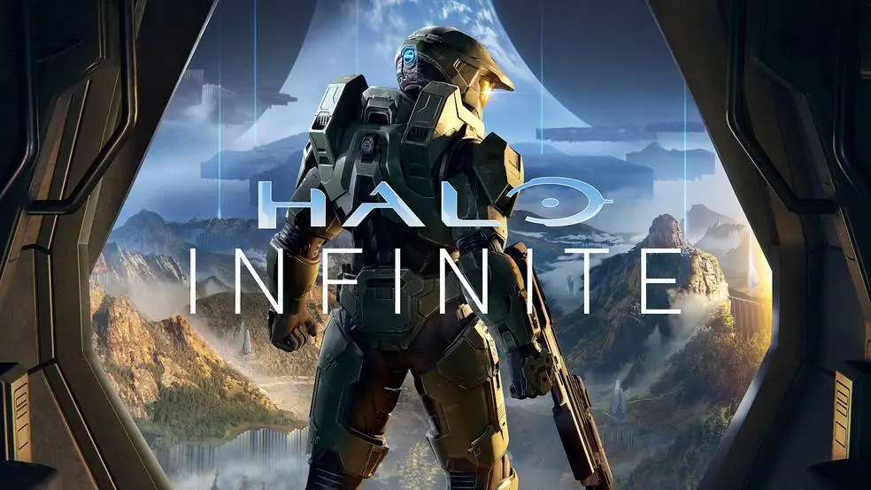

CORES NOS
GAMES
Explore o universo das cores, suas propriedades físicas, percepção visual e aplicações na arte, design e tecnologia.
Explore o universo das cores, suas propriedades físicas, percepção visual e aplicações na arte, design e tecnologia.

A evolução das cores nos videogames foi impulsionada por saltos tecnológicos, passando de gráficos monocromáticos para mundos virtuais hiper-realistas. Hoje, as cores não são apenas estéticas, mas ferramentas vitais de design focadas na psicologia do jogador, guiando a atenção, evocando emoções e definindo atmosferas.

1. Os primeiros jogos, como o clássico
Pong (1975) ou sistemas baseados em Atari, utilizavam telas em preto e branco ou contavam com
sobreposições de papel celofane colorido para dar ilusão de cor.Foco: A jogabilidade era totalmente
abstrata. As cores existiam para diferenciar os poucos elementos geométricos na tela.




Hoje podemos ter jogos com qualidades tão realistas que as cores se tornam tão reais quanto a própria
realidade principalmente depois que os jogos passaram para a realidade virtual.

MUNDO DOS GAMES
APENAS JOGUE!!!
Seu jogo favorido, jogos da sua infância. Enfim, observe o contraste das cores e
cada detalhes que puder que envolva algum conteudo que aprendeu.